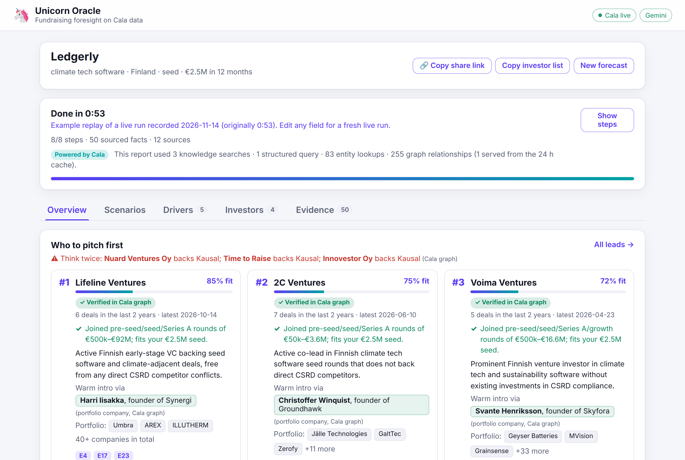
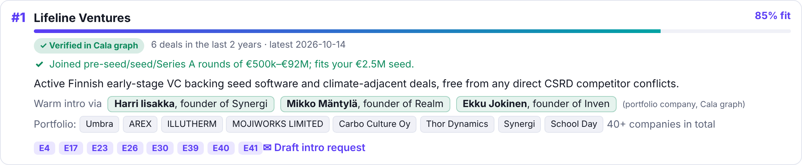
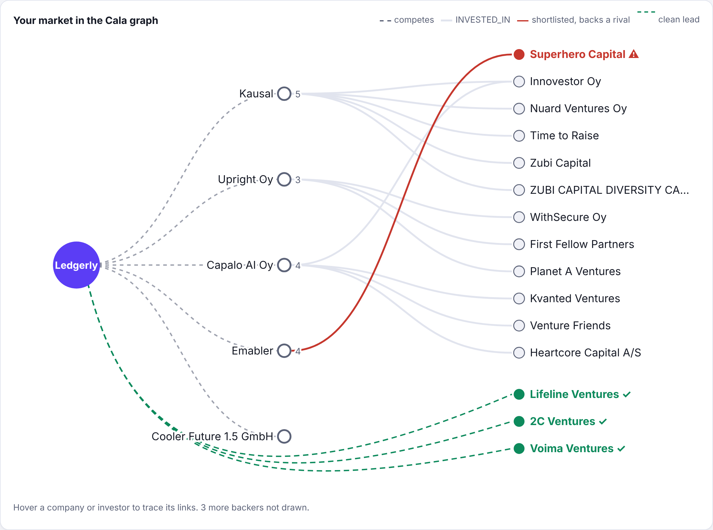
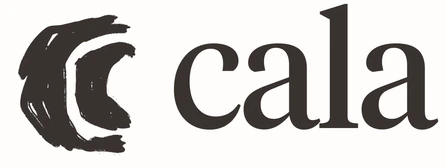
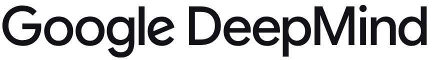

JUNCTION 2026 · CALA CHALLENGE: MAKE UNICORNS REAL
Will your round close, and who should you pitch first? Sourced answers from Cala’s live data and knowledge graph.
THE PROBLEM
Before the first meeting, three questions decide whether a pitch is worth the time. Today each takes days of manual digging.
CONFLICTS
Pitching a rival’s investor wastes a meeting and can put your plan in a competitor’s board pack.
FIT
Static investor lists don’t show who is active now, at your stage and ticket size.
ACCESS
Warm intros beat cold email, but finding the right person means mapping whole portfolios by hand.
THE ANSWER

HOW A RUN WORKS
3 knowledge searches + 1 Cala QL query, in parallel
50 sourced facts
Shortlist
Competitor graph
who backs them
11 s
AI committee
3 partners debate
30 s
Graph check
rounds, intros, conflicts
5 s
Forecast
Drivers → 2×2 scenario matrix → chance to close
P(round) = Σ P(scenario) × P(round | scenario)
52 s
streams in live
53 s total
Timings from the recorded live run for Ledgerly (CSRD reporting SaaS, €2.5M seed). The shortlist is ready before the scenarios finish.
HOW IT USES CALA
| Cala feature | Call | What the founder gets |
|---|---|---|
| Knowledge search | POST /v1/knowledge/search | Competitors, rounds, lead investors, sourced |
| Cala QL query | POST /v1/knowledge/query | Top-funded sector companies and investors |
| Entity resolution | GET /v1/entities + introspection | Each investor matched to a real entity |
| Graph traversal | POST /v1/entities/{id} | Portfolios, competitor backers, round sizes |
| People edges | FOUNDED, IS_CEO_OF, IS_CTO_OF | Portfolio founders as warm intro paths |
Every report prints its own usage line. Ledgerly’s: 3 knowledge searches · 1 structured query · 83 entity lookups · 255 graph relationships.
GRAPH CHECKS
Verified
Real entity in Cala’s graph, with recent deals and latest deal date
Right size
Stages and round sizes it joined, compared with your raise
Warm intro
Founders and CEOs of companies it already funded
Conflict
An INVESTED_IN edge into one of your competitors

YOUR MARKET
Your startup, the competitors Cala found, and their backers from INVESTED_IN edges.
Red: Superhero Capital was shortlisted, but backs the competitor Emabler, so it drops to last.
Green: clean leads with no competitor stake.

ONE REAL RUN · LEDGERLY, CSRD REPORTING SAAS, €2.5M SEED
50
sourced facts from 12 sources
255
graph relationships read, 83 entity lookups
4/4
shortlisted leads verified in Cala’s graph
8
warm intro paths through portfolio founders
1
conflict caught: Superhero Capital backs rival Emabler
21%
chance to close in 12 months (range 3–39%)
BUILT TO BE TRUSTED
A lead is kept only if its name appears in Cala evidence.
Evidence chips open the exact fact and its source.
Shortlist and forecast run in parallel; Cala answers cached for 24 h.
Example chips replay real recorded runs in about 9 s.
Gemini retries, then falls back to a smaller model.
Report links, investor list export, intro email drafts.
LIMITATIONS
TRY IT NOW
Sample report: 93-127-213-190.sslip.io/r/run-14f6288823
OUR JUNCTION 2026 CHALLENGES

MAIN CHALLENGE · FINTECH TRACK
by Cala · Cala data is the core of every report

TECH CHALLENGE
by Google DeepMind · Gemini runs the AI committee and scenarios